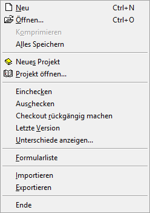
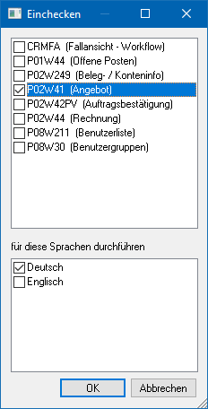
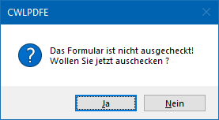
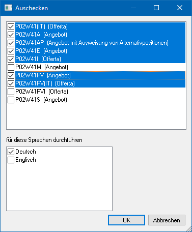

Wenn im WinLine Formular Editor das Fenster "Formularliste" geöffnet wurde und aktiv ist, dann stehen folgende Funktionen im Menü "Datei" zur Verfügung:

Ø Neu
Durch Anwahl des Buttons "Neu" kann ein neues Formular geschaffen werden, welches nichts auf ein bestehendes PDI verweist.
Achtung
Diese Art der Formularerstellung ist in der Regel nur für MDP Projekte notwendig. Ein neue Formular mit einem Verweis auf ein bestehendes PDI wird erzeugt, in dem ein bestehendes Formular mit diesem PDI geöffnet und ein "Speichern unter" durchgeführt wird.
Ø Öffnen…
Mit Hilfe eines Auswahlfensters kann ein vorhandenes Formular geöffnet werden.
Ø Komprimieren (wird noch nicht unterstützt)
Mit diesem Menüpunkt kann die Datei MESOFORMX.MESO (X steht für die Sprache) komprimiert werden. Das ist dann sinnvoll, wenn z.B. viele angepasste Formulare gelöscht wurden.
Ø Alles Speichern
Es werden alle geöffneten und mit einer Änderung versehenden Formulare gespeichert.
Ø Neues Projekt
Über diesen Menüpunkt kann ein neues MDP-Projekt erstellt werden. MDP-Projekte dienen zum Transport von geänderten Formularen, können aber auch Scripte oder Fensteränderungen beinhalten. Nähere Information entnehmen Sie bitte dem Kapitel "MDP Projekt".
Hinweis
Damit ein MDP-Projekt am Ziel eingelesen werden kann, muss eine entsprechende Lizenz vorhanden sein.
Ø Projekt öffnen…
Über diesen Menüpunkt kann ein bestehendes Projekt geöffnet werden, wo dann z.B. weitere geänderte Formulare hinzugefügt werden können. Nähere Information entnehmen Sie bitte dem Kapitel "MDP Projekt".
Ø Einchecken
Über diesen Menüpunkt können geänderte Formulare eingecheckt werden. Das bedeutet, das geänderte Formulare - die generell nur lokal gespeichert werden - am Server rückgeschrieben werden. Dieses bedeutet aber auch, dass Formularänderungen erst dann für jeden Benutzer (in einer Netzwerkinstallation) sichtbar werden, wenn das Formular eingecheckt wird (die Verteilung in einer Netzwerkinstallation erfolgt automatisch).
Hinweis 1
Auch bei lokalen Installationen müssen die Formulare nach der Änderung wieder eingecheckt werden, denn ausgecheckte Formulare können bei einem Update nicht übernommen werden.
Hinweis 2
Beim Einchecken kann bzw. können die Sprache(n) selektiert werden, für die das Formular eingecheckt werden soll. Hierbei werden nur die Sprachen vorgeschlagen für welche eine MESOFORMX.MESO-Datei (X steht für die Sprache) in der Installation vorhanden ist.

Auf dieser Wiese kann ein vom Benutzer modifiziertes Formular auf einmal in mehreren Sprachen importiert und für die Sprache zur Verfügung gestellt werden.
Achtung
Bevor ein Update eingespielt wird, muss unbedingt geprüft werden, dass alle Formulare eingecheckt sind - ansonsten werden diese lokalen Änderungen nicht übernommen.
Ø Auschecken
Über diesen Menüpunkt kann ein bzw. können mehrere Formular(e) ausgecheckt werden. Das bedeutet, dass das Formular lokal gespeichert wird und somit alle Änderungen lokal durchgeführt werden. Wenn in einer Netzwerkinstallation ein anderer Benutzer das gleiche Formular ändern will, dann wird dieser darauf hingewiesen, dass das Formular bereits geändert wird.
Hinweis 1
Wenn ein Formular ohne vorheriges Auschecken gespeichert wird, dann wird hierauf durch folgende Sicherheitsabfrage hingewiesen. Wenn diese Frage mit "JA" beantwortet wird, dann wird das Formular zuerst ausgecheckt und anschließend gespeichert.

Hinweis 2
Analog zum Einchecken kann bzw. können die Sprache(n) selektiert werden, für die das Formular eingecheckt werden soll. Hierbei werden nur die Sprachen vorgeschlagen für welche eine MESOFORMX.MESO-Datei (X steht für die Sprache) in der Installation vorhanden ist.

Auf dieser Wiese kann ein Formular auf einmal in mehreren Sprachen ausgecheckt und in der Folge in der jeweiligen Sprache getrennt bearbeitet werden.
Ø Checkout rückgängig machen
Diese Option ist nur bei einer Netzwerkinstallation verfügbar. Mit dieser Option wird der Status "ausgecheckt" wieder zurückgesetzt, d.h. das Formular auf die zuletzt eingecheckte Version bzw. die originale Version zurückgesetzt wird, wodurch alle Änderungen gehen verloren.
Ø Letzte Version
Mit dieser Option (ist nur bei einer Netzwerkinstallation verfügbar) kann jedes beliebige Formular (unabhängig vom Status) vom Server übernommen werden. Damit werden eventuell lokal vorgenommene und noch nicht eingecheckte Änderungen überschrieben.
Ø Unterschiede anzeigen…
Mit dieser Option werden Unterschiede zwischen dem aktuell geänderten Formular und dem Original-Formular (bzw. dem Serverformular) angezeigt.

Die Änderungen werden mit den folgenden Symbolen dargestellt:
ü  - Unterschied in der Zeile
- Unterschied in der Zeile
ü  - Zeile existiert in der Änderung nicht
mehr
- Zeile existiert in der Änderung nicht
mehr
ü  - Zeile existiert nur in der Änderung
- Zeile existiert nur in der Änderung
Mit den Buttons "Nächster Unterschied" und "Voriger Unterschied" kann zu den jeweiligen Einträgen gewechselt werden, wobei diese Einträge dann auch entsprechend markiert werden.
Ø Formularliste
Durch Anwahl dieses Menüpunkts wird eine weitere Formularliste, in welcher alle Formulare aufgelistet werden, aufgerufen.
Ø Importieren
Diese Option ermöglicht den Import von Formularen, welche als Textdatei (*.PDF) gespeichert wurden bzw. von Formularen, die in einer früheren Programmversion erstellt wurden. Exportierte Formulare können auch einfach über "Drag & Drop" in den Formular Editor gezogen und damit importiert werden.
Hinweis
Enthält ein Formular eine "VB-Script" Formel, welche wiederum ein "@"-Zeichen beinhaltet, so muss vor dem Import manuell vor dem "@"-Zeichen ein "Backslash (\@) gesetzt werden. Ansonsten kann das Formular nicht importiert werden.
Hintergrund dafür ist, dass der VB Script Code selbst ist durch "@"-Zeichen eingerahmt ist.
Ø Exportieren
Mit dieser Option kann das Formular als Text-Datei abgespeichert werden. Damit bekommt die Datei die Erweiterung *.PDF.
Hinweis
Es handelt sich hierbei um eine normale Text-Datei, die z.B. mit Notepad geöffnet werden kann und um keine Acrobat Reader-Datei.
Achtung 2
Wenn das Formular aus einer WinLine Version 9.0 Build 9002 oder höher exportiert wird und nachfolgend in eine WinLine mit niedrigerer Versionsnummer importiert werden soll, dann muss die Text-Datei in ANSI-Formatierung erzeugt werden. Dazu wird im "Speichern Als"-Dialog beim Feld "Speichern als Typ" das Format "ANSI PDF-Files (*.PDFANSI) beim Exportieren gewählt.
Ø Ende
Mit Hilfe dieses Eintrags wird der WinLine Formular Editor beendet. Falls ein Formular noch geöffnet ist und nach der letzten Bearbeitung noch nicht abgespeichert wurde, dann erfolgt zunächst eine Speicherungsabfrage.